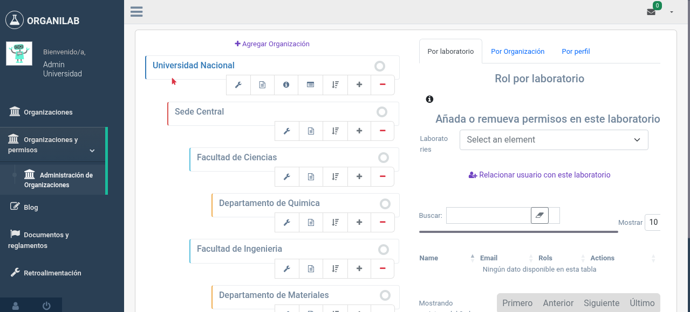
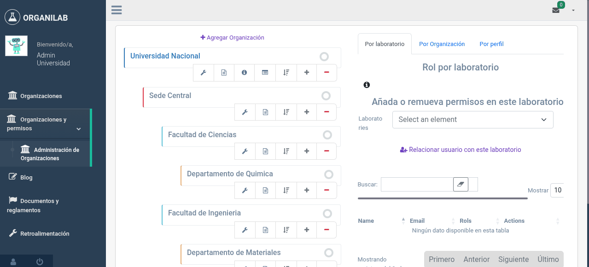

2. Jerarquía Organizacional
La estructura organizacional de Organilab replica la jerarquía real de su institución. Entender cómo funciona esta estructura es esencial para configurar los permisos correctamente.
La estructura como árbol
Organilab organiza las instituciones como un árbol jerárquico. Cada nodo del árbol es una "organización" que puede contener organizaciones hijas y laboratorios.
Ejemplo de estructura jerárquica de una universidad con tres sedes regionales.
Organizaciones Raíz vs. Organizaciones Hijas
Organización Raíz
Es la organización de nivel superior, sin organización padre. Tiene las siguientes capacidades exclusivas:
- Crear laboratorios
- Crear y gestionar usuarios
- Definir roles y permisos
- Crear organizaciones hijas
- Gestión completa del sistema
Organización Hija
Es una organización que tiene un padre en la jerarquía. Sus capacidades son:
- Relacionar laboratorios existentes
- Asignar roles a usuarios dentro de su ámbito
- Crear sub-organizaciones (si tiene permisos)
- Gestionar su propia estructura interna
Niveles de la Jerarquía
Aunque Organilab permite crear tantos niveles como necesite, una estructura típica para una universidad costarricense sería:
| Nivel | Ejemplo | Descripción |
|---|---|---|
| 0 (Raíz) | Universidad Nacional | La institución completa. Gestión centralizada. |
| 1 | Sede Central, Sede Chorotega | Sedes regionales o campus. Agrupan facultades. |
| 2 | Facultad de Ciencias, Escuela de Química | Unidades académicas. Contienen laboratorios. |
| 3+ | Departamento, Sección | Subdivisiones adicionales si se necesitan. |
Cómo se ven las organizaciones en Organilab
En la interfaz de Organilab, la estructura organizacional se presenta como un árbol navegable. Al hacer clic en una organización, puede ver sus hijas, laboratorios asociados y gestionar usuarios y roles.

Vista del árbol de organizaciones en el panel de administración de permisos
Desde esta vista, los administradores pueden:
- Ver la estructura completa de la organización
- Crear nuevas organizaciones hijas
- Mover organizaciones dentro de la jerarquía
- Activar o desactivar organizaciones
- Acceder a la gestión de usuarios y roles de cada organización

Ventana emergente al hacer clic en una organización, mostrando opciones de gestión
Relación con los Laboratorios
Cada laboratorio pertenece a una organización específica. Esta relación determina:
- Quién puede administrarlo: Los administradores de la organización padre
- Quién puede acceder: Los usuarios con roles asignados en ese laboratorio o en su organización
- Dónde aparece: En el listado de laboratorios de la organización y sus descendientes